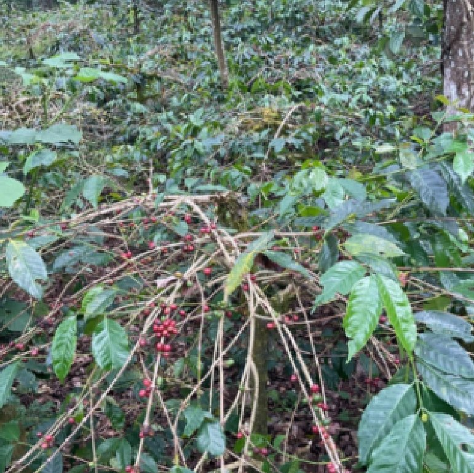
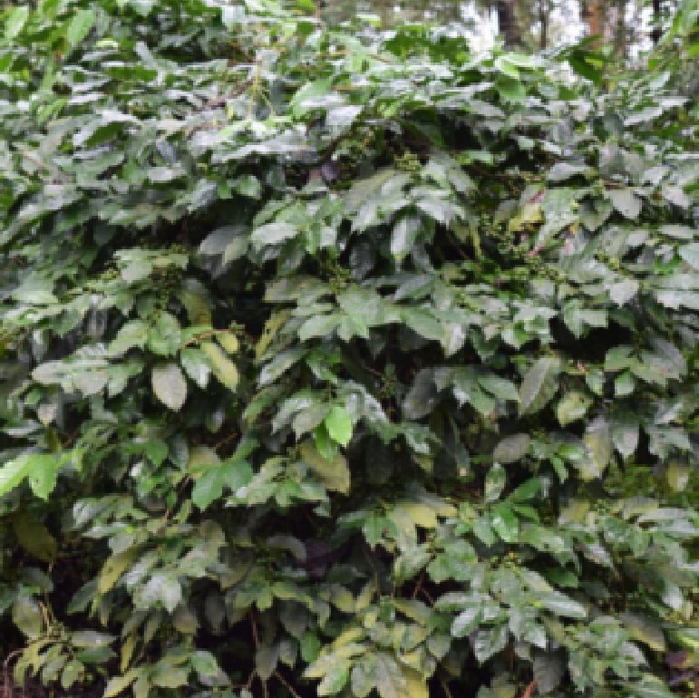

A WSB-infested Arabica plant photographed during our 2026 field visits: dry, leafless branches on a declining plant.
Coffee White Stem Borer · AI screening
Spotting White Stem Borer from a single photo
An AI screening tool for the Varsapradaya coffee platform: what it is, how it works, how it helps, and what comes next.
Arabica coffeeImage AI
At a glance
1 photo
of the whole plant is all the user needs to take
Seconds
from taking the photo to getting a verdict
3-way
answer: no visible signs, retake, or WSB signs likely
Heatmap
shows which part of the photo drove each result
Varsapradaya · CWSB AI screening
Executive summary
The solution on one page
We have built an AI tool that looks at a photo of a coffee plant and says whether it shows signs of White Stem Borer, so that inspection effort goes where it is needed most.
1The problem
Coffee White Stem Borer (CWSB) is one of the most damaging pests of Arabica coffee in India. The grub feeds hidden inside the stem, so damage shows late. Finding it today means a trained person inspecting stems plant by plant.
2Our solution
A farmer or field officer photographs a coffee plant and, within seconds, gets one of three answers: no visible signs, retake, or WSB signs likely. A heatmap shows what drove the result.
3What we have built
A field validation protocol, the AI model with built-in photo quality checks, evidence heatmaps, a deployment-ready package for phones and field devices, and a retraining process so the model improves with each season’s data.
4How it helps
Field teams can screen many plants in minutes and spend inspection time only where a photo says to look. Infestations can be found earlier and more consistently, and every screening adds to the Varsapradaya platform’s pest intelligence.
5Where we are
The core AI model is built and working. Next come wider field data collection, an automatic photo-framing check, Version 2 of the model, and the farmer-facing app.
Bottom line
A phone photo becomes a fast, consistent first check for White Stem Borer, helping growers act before an infestation spreads.
Varsapradaya · varsapradaya.com
2
Varsapradaya · CWSB AI screening
Section 1
The problem we are solving
Coffee White Stem Borer (Xylotrechus quadripes) is a beetle whose grubs tunnel inside the main stem of Arabica coffee plants. Because the feeding is hidden, the visible signs appear late, often when the plant can no longer be saved.
Adult beetles that emerge from an infested plant lay eggs on nearby plants. Every infested plant that is missed raises the risk for the plantation around it.
Signs our field team records on each plant:
Ridges on the barkExit holesPowdery frassBeetlesYellowing leavesWiltingDie-back
Most of these are only clear in mid- to late-stage infestation, which is why early detection is valuable.
SlowStems are checked plant by plant, by hand, across large estates.
Needs expertiseEarly signs are subtle and easy to miss without training.
InconsistentResults vary with who inspects, when, and how carefully.
Section 2
How the solution works
A farmer or field officer takes one photo of a plant. Within seconds the system checks the photo, scores it and returns a clear answer.
1
PhotographThe whole plant, from 2–3 metres
2
Quality checkBlurry, too dark or glare? Ask for a retake
3
AI modelReads the plant’s condition from the photo
4
VerdictOne of three plain answers, with a heatmap
5
ActionInspect and treat the plants that were flagged
Verdict
When
What the user does
No visible signs
The plant shows no signs of WSB-related decline
No action needed now.
Retake / inconclusive
The result is uncertain, or the photo is blurry, dark or badly framed
Take a new photo following the on-screen guide.
WSB signs likely
The plant shows strong signs consistent with WSB
Inspect the stem physically, then treat or remove the plant as advised.
When a plant is photographed more than once, the plant’s verdict follows its most concerning photo. This cautious rule favours catching infestations over missing them.
Varsapradaya · varsapradaya.com
3
Varsapradaya · CWSB AI screening
Section 3
What we have built
Six building blocks, from the field visit to a model that is ready to run on a phone.
01
Field validation protocol
A standard field sheet on which our team records each plant’s symptoms (ridges, exit holes, frass, beetles, yellowing, wilting, die-back) and each hotspot’s conditions (temperature, humidity, light, soil moisture, pH, NDVI). It ties every photo to observations made on the ground.
02
Privacy and photo quality built in
Location data is removed from every photo. Blurry, dark or glare-filled photos are caught before they are scored, and the user is asked to retake them, so poor photos never lead to a wrong call.
03
The AI model
A modern image-recognition network, first trained on millions of general images and then specialised on photos of coffee plants. It reads the condition of the whole plant (canopy density, colour, die-back) and gives a result in seconds.
04
Clear three-way verdict
Instead of a raw score, the user sees one of three plain answers: no visible signs, retake, or WSB signs likely. When the model is unsure, it says so rather than guessing.
05
Evidence heatmaps
Every result comes with a heatmap that highlights the parts of the photo behind the decision, so agronomists and farmers can see why a plant was flagged.
06
Ready to deploy, built to improve
The model is packaged in an open standard format (ONNX) that runs on a phone, a server or a small field device. A retraining process turns each season’s new photos into an improved version, which replaces the current one only after it proves better.
Varsapradaya · varsapradaya.com
4
Varsapradaya · CWSB AI screening
Section 4
What the user sees
Each result comes with a heatmap. Warmer colours (yellow to red) mark the parts of the photo that drove the decision most.

The photoThe heatmap
WSB signs likely
Plant with WSB infestation
A declining plant with dry, leafless branches. The tool flags it with high confidence, and the heatmap points to the areas behind the decision.
Next step: inspect the stem and treat or remove the plant.

The photoThe heatmap
No visible signs
Healthy plant
A dense, green canopy. Only small patches draw attention, and the tool finds no signs of decline.
Next step: no action needed now.
Why the way the photo is taken matters
The model reads the condition of the whole plant: canopy density, colour and die-back. The app will therefore guide users to photograph the whole plant from 2–3 metres, and ask for a retake when a photo is unsuitable. Recognising stem-level signs such as bore holes from close-up photos is part of the next phase.
Varsapradaya · varsapradaya.com
5
Varsapradaya · CWSB AI screening
Section 5
How this solution helps
The tool does not replace stem inspection. It decides where inspection is needed, so scarce expert time goes to the right plants.
Screen more plants, faster
A photo takes seconds. Field staff can cover far more plants per day and save stem inspections for the plants the tool flags.
A consistent first opinion
Every plant is judged by the same rules, whoever takes the photo and whichever estate it is on.
Act sooner, limit the spread
Flagged plants can be inspected and treated or removed before emerging beetles reach neighbouring plants.
Better photos and records
The quality check asks for a retake on blurry, dark or glare-filled photos. Each screening can be logged by plant and date.
Evidence you can check
Heatmaps show why a plant was flagged, so agronomists and farmers can trust, or challenge, each result.
Grows with the platform
It sits alongside Varsapradaya’s weather and soil data. A separate risk score (season, altitude, shade, rainfall) can be shown next to each verdict, and each season’s photos make the next model better.
Who benefits
What they get
Farmers
An early warning from a phone photo, a clear next step, and fewer plants lost to late detection.
Field officers and agronomists
A prioritised list of plants to inspect, consistent screening across estates, and heatmap evidence to explain each call.
The coffee sector
Earlier, wider and more consistent pest surveillance, and a reusable approach that can be extended to other pests and diseases.
Varsapradaya · varsapradaya.com
6
Varsapradaya · CWSB AI screening
Section 6
Roadmap
Stage 1 completeCore AI model
Field validation protocol and first field visits
AI model built
Photo quality check and three-way verdict
Evidence heatmaps
Deployment-ready model package
Retraining process for new versions
1
Wider field data collectionPriority
Photos from many more estates, shade levels and seasons: healthy plants, plants stressed by other causes such as drought or nutrient deficiency, early-stage infestations, and stem close-ups paired with whole-plant photos. Every label verified by stem inspection and graded by severity.
2
Automatic framing check
A small model that recognises when a photo is not a whole-plant shot and asks the user to retake it, before any verdict is given.
3
Version 2 of the model
Retrain on the wider data so the tool can recognise earlier-stage infestation and tell WSB apart from other causes of decline. Version 2 replaces Version 1 only if it performs better.
4
Field product
A prediction service, then a farmer app with a camera guide, the three-way verdict and retake prompts, and an agronomic risk score shown alongside each result.
Section 7
Where support would help
01
Access to estates
Field access across several estates, shade levels and seasons for the wider data collection, especially healthy plants and plants stressed by other causes.
02
Expert verification
Entomologists, for example from CCRI or the Coffee Board, to confirm plant labels by stem inspection.